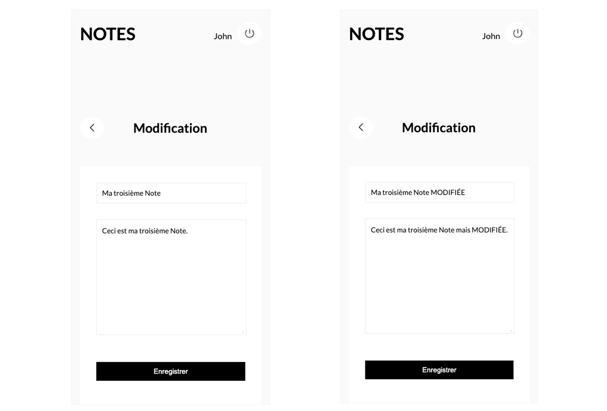
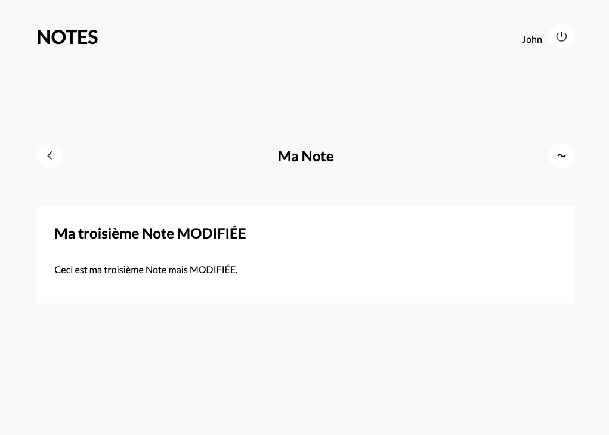

"Notes" est un projet personnel d’une application web, responsive, qui propose à ses utilisateurs un moyen simple, rapide et sécurisé de :
- créer du contenu
- les consulter
- les modifier
- les supprimer
En effet, "Notes" étant une application de type C.R.U.D, il permet les 4 opérations suivantes :
- CREATE (Créer)
- READ (Lire)
- UPDATE (Modifier)
- DELETE (Supprimer)
------- Site web en maintenance -------
Rôle
Dév Symfony
Designer UX UI
Client
Projet Personnel
Nombre de pages
6
Année
2024
Type de Projet
From Scratch
Scope
Symfony
Twig
CRUD
SQL
phpMyAdmin
PHP
Responsive via Media Queries
HTML
CSS
Les fonctionnalités
01. Authentification
Lorsque l’utilisateur arrive sur l’application pour la première fois, il est invité à se créer un compte.
Pour cela il clique sur le lien "Créer un compte".
Ce
qui le redirige sur la page "Inscription" où il pourra s'enregistrer en
renseignant les champs demandés puis en cliquant sur le bouton "Enregistrer".
Il sera ensuite redirigé vers la page d’accueil de sa session personnelle.
02. C.R.U.D
Une fois connecté, l'utilisateur arrive sur la page d’accueil de sa session
personnelle, la page "Mes Notes".
C'est ici que seront affichées toutes les
Notes
qu'il va créer.
A partir de cette page, l’utilisateur pourra accéder à 4 fonctionnalités :
- CREATE (Creer)
- READ (Lire)
- UPDATE (Modifier)
- DELETE (Supprimer)
CREATE (CREER)
La fonction CREATE permet à l’utilisateur d’ajouter un nouvel enregistrement dans la base de données.
Exemple : Creation d’une nouvelle note :
En appuyant sur l’icône présent dans la page d'accueil, l’utilisateur est redirigé vers la page « Nouvelle Note » où il sera invité à créer une nouvelle note en renseignant les champs appropriés et en cliquant sur le bouton "Enregistrer" pour valider l'opération et ainsi provoquer la creation de la Note dans la Base de données.
READ (Lire)
READ est l’opération qui va permettre à l’utilisateur de voir la Note qu’il vient de créer. Ca n’affecte pas la base de données. En effet, READ fait appel à une fonction qui va interroger notre base de données et en extraire ce qu’on y a enregistré.
Via la fonction READ, l'utilisateur pourra :
- Soit, voir affiché le contenu d'UN SEUL enregistrement
- Soit, voir affichés PLUSIEURS enregistrements sur la même page
Exemple 1 : Voir le contenu de la nouvelle note
Une fois la création de la nouvelle note validée, l'utilisateur sera redirigé vers la page d’accueil de sa session, où sera présente la Note qu’il vient de créer. Pour voir son contenu, il n'aura qu'a cliquer sur le titre de la Note pour etre redirigé vers la page qui affiche le contenu de cette Note.
Exemple 2 : Voir affichées plusieurs Notes
L'utilisateur peut répéter l'operation de création de Notes autant de fois qu'il le souhaite. Il les retrouvera toutes affichées sur sa page d'accueille, dans un ordre chronologique de création.
UPDATE (Modifier)
UPDATE est l’operation qui va permettre à l’utilisateur de modifier une Note existante et de l’enregistrer dans la base de données. Cela va permettre à l’utilisateur de modifier un champ en particulier ou plusieurs champs en même temps.
Exemple : Modification du titre de la troisième Note
Apres avoir cliqué sur l’icône de la note à modifier, l’utilisateur est redirigé vers la page de « Modification « . Il pourra ensuite modifier le titre. Une fois qu’il aura cliqué sur le bouton « Enregistrer », les modifications seront enregistrées dans la base de données et il sera redirigé vers la page d’accueil de sa session personnelle, où sera présente la Note modifiée.
 DELETE (SUPPRIMER)
DELETE est l’opération qui va permettre à l’utilisateur de retirer un enregistrement de la Base de données.
Exemple : Suppression de "Ma troisième Note MODIFIÉE"
Apres avoir cliqué sur l’icône de la Note ciblée, elle est directement supprimée.
03. Déconnexion
Lorsque l’utilisateur va se déconnecter, l’application va déclencher l’itinéraire LOGOUT, ce qui va redirigé le navigateur vers le point de terminaison de déconnexion de l’application : LOGIN, la page de connexion.
Exemple : Déconnexion de l’application
Apres avoir cliqué sur l’icône l’utilisateur va quitter sa session et sera redirigé vers la page de connexion.